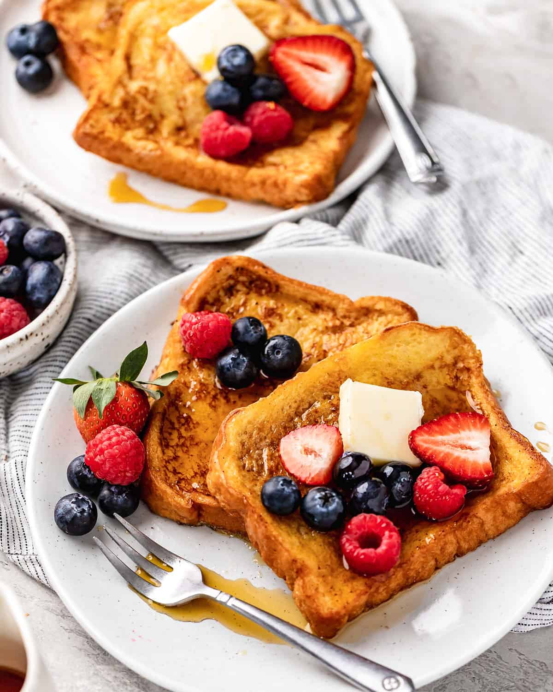

Best French Toast Recipe

Easy to make in 20 minutes with 7 ingredients
French toast is a classic breakfast dish made by dipping slices of
bread in a mixture of beaten eggs and milk, then frying them until
golden brown. Often sprinkled with powdered sugar and served with
maple syrup or fresh fruit, French toast is a delicious and comforting
morning treat enjoyed worldwide.
Ingredients
- Bread
- Eggs
- Whole Milk
- Light Brown Sugar
- Salted Butter
- Cinamon
- Vanilla Extract
Steps
- Begin by whisking the eggs together
-
Then whisk the sugar, vanilla and cinnamon into the eggs before
adding the milk
- Then, whisk in the milk.
-
Once the mixture in finished, pour it into a shallow baking dish.
-
I recommend soaking the bread for 10-15 seconds on each side. This
will vary with the texture of the bread you choose.
- Butter your pan and cook until golden brown on each side